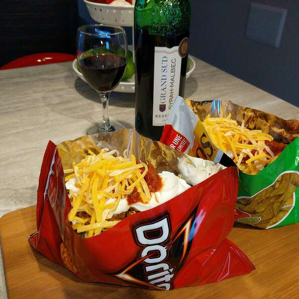

Taco in a Bag

Description
The chip bag serves as a shell for the tacos.
Ingredients
- 1 pound lean ground beef
- 1 oz package taco seasoning
- 2.5 oz packages corn chips
- 2 cups shredded lettuce
- 1 chopped fresh tomato
- 1 cup shredded Cheddar cheese
- 1/2 cup salsa
- 1/2 cup sour cream
Steps
- Place ground beef in a large skillet. Cook and stir over medium heat until browned. Drain excess oil. Mix in the
taco
seasoning and prepare according to the directions on the package.
- With the bags unopened, gently crush the corn chips. Snip the corners off the bags using scissors and slit open
the bags
along the side edge. Spoon equal amounts of the beef mixture, lettuce, tomato, Cheddar cheese, salsa and sour
cream into
the bags on top of the crushed chips. Serve in the bag and eat using a fork.